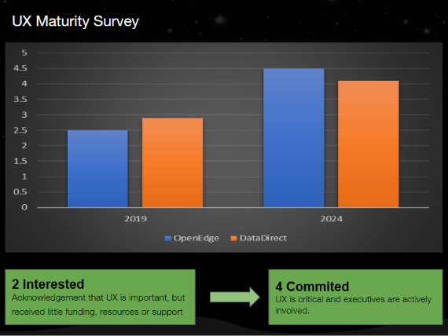
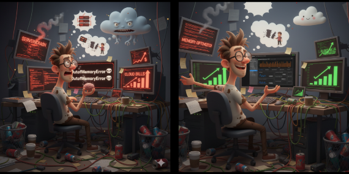
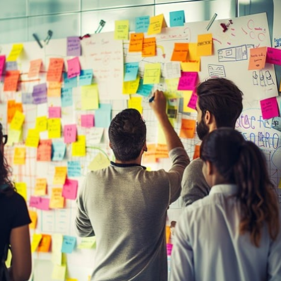
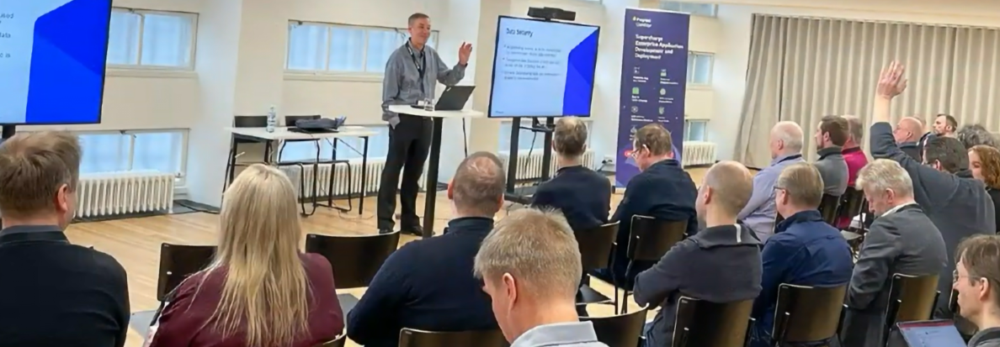

Leading design for the software development experience
Promoted to Manager of User Experience in 2020 at Progress Software, I built a geographically distributed design team by hiring across Bulgaria and India, while supporting team members in the US. During the Ipswitch and Kemp acquisitions, I integrated all incoming design talent into the team. Working closely with Product Management and cross-functional stakeholders, we ran user research for OpenEdge and developed detailed personas to guide design strategy.
My team designed key products such as the OpenEdge Command Center (OECC) and Memory Profiler, resulting in a 25% improvement in CSAT and a 50% reduction in memory-related support tickets. We accelerated customer cloud adoption with OECC, implemented Pendo analytics across all products to find and fix UX bottlenecks, and enhanced design system processes — significantly reducing front-end development time.
Creating the conditions for people to thrive
Design leadership is about creating the right conditions for people to thrive, innovate, and make a meaningful impact.
Team members are trusted with autonomy and supported with the tools, context and space to lead confidently.
Mentorship and continuous learning drive individual development and collective excellence.
Open communication and cross-functional dialogue spark alignment and creative momentum.
Empathy and psychological safety encourage risk-taking, resilience and authentic teamwork.
Clear goals and a strong sense of direction align teams toward long-term impact and mission.
Curiosity is celebrated, experimentation is encouraged, and ideas are nurtured from every level of the team.
We ran a UX maturity survey in 2019, then again in 2024.

The results revealed a significant improvement in UX maturity scores for Progress ADP product teams — driven by Buyer Journey workshops, personas now embedded in every JIRA story, and Design Thinking courses that became mandatory learning for all Progress ADP engineers.
Led the UX vision and execution for a critical zero-to-one initiative, transforming how users manage IT security and operations across cloud and on-prem. Result: an 80% increase in adoption and a 25% boost in CSAT.
Led the team through an AI-enabled memory profiler, crafting an experience that let users resolve complex memory issues efficiently — a 50% reduction in inbound support calls and forum inquiries, and improved CSAT.
Led a comprehensive customer interview initiative with Product Management to identify pain points and validate mockups directly with users, presenting findings formally to senior management.
Delivered design assets for established OpenEdge products (Pro2, OEM, OEE, PDSOE, installers), navigating resource allocation between new product work and mature offerings.
Owned design for DataDirect HDP and ARC Configuration Manager, having first worked on them as an IC — and watched the DataDirect line grow into an $80M business.
Established a WCAG 2.2 AA-compliant framework, reducing design debt and bridging design and engineering — accelerating product delivery timelines by 30%.
Led development of Pendo dashboards and in-app guides to anchor design in real user data, visualizing friction points and driving redesigns that measurably boosted conversion and engagement.
Led UX integration during the Kemp and Ipswitch acquisitions — assimilating talent, design systems and documentation, mentoring senior designers, and directing a full rebrand under Progress.

From a blank slate to a distributed team of seven.
Faced with early hiring challenges as a newcomer to the role, I focused on strong collaboration through in-depth product walkthroughs and close stakeholder engagement, building trust and alignment across the teams we supported. I integrated talented designers absorbed from a key company acquisition, and hired strategically across India and Bulgaria to build a fully distributed team collaborating seamlessly across the US, Bulgaria and India — prioritizing a safe, inclusive environment where curiosity and risk-taking thrived.
Great design doesn't happen in isolation.

Spearheaded a study with Engineering, Product, Tech Support, Customer Success and Community Management to understand the true value of AI for users — data-driven decisions aligned to user needs and business goals.
When a critical security fix compressed the OECC release to two weeks, coordinated closely with Engineering and Product in a war room to protect the user experience under pressure.
Advised the Kendo UI team from hands-on design-system experience; suggestions were incorporated into subsequent releases of the Progress Kendo ThemeBuilder.
Ran workshops with Engineering, Product, Support, Marketing, Sales, Professional Services and Community Managers, uncovering insights that improved sales and lead conversion.
Interviewed senior executive stakeholders and customers on how they develop software on OpenEdge, presenting a comprehensive report to senior management.
Represented design in monthly cross-department syncs with leaders across sales, marketing, technical support, customer success and community management.
Used data via tools like Pendo, plus research, to ground strategy in real user needs and business objectives — and storytelling to make complex problems accessible and actionable for every stakeholder.
Acted as a design evangelist across the organization, gaining trust from executive stakeholders and demonstrating the value of design in achieving business outcomes — bringing design thinking into feature planning, prioritization and roadmap discussions.

"Forging this high-performance culture and team from a blank slate was a deeply challenging, yet profoundly rewarding, experience. The impact is visible not only in the caliber of our products but also in how design is now fundamentally perceived and valued across the entire organization."